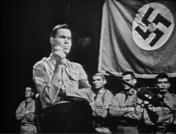

Már az interjú első fele is heves indulatokat váltott ki, minek következtében az érdemi vita sokszor primitív mocskolódásba csapott át. Ezért ennél a bejegyzésnél a kommentálást letiltottam.

PLAYBOY: Miféle balhékról van szó?ROCKWELL: Nos, még nem próbáltam ki eddig, de az egyik nagy vágyam, hogy béreljek magamnak egy repülőt és füsttel az égre egy hatalmas szvasztikát rajzoljak New York fölé, az égre Hitler születésnapján. Vagy valami hasonló. Vagy talán kibérelni egy gépet, hogy rajzoljon egy dávid csillagot az égre, azután jönnék én egy másik géppel, és barna füsttel összefirkálnám – Ben Gurion születésnapján.
Megnéztem az államszövetségi szabályokat, semmit sem tudnának csinálni velem. Az egyetlen dolog, amire szükségem van a végrehajtáshoz az a pénz. De ez még a jövő zenéje. Az egyik legnagyobb dolog, ami már véghezvittünk, hogy reklámozzuk magunkat a „Nigger Társaság Hajójegyei Afrikába”-ban.
Ez a legfelkapottabb postán rendelt eladási cikkünk; fehér gimnazista srácok ezerszámra veszik. Szeretnéd, ha felolvasnám, mire jogosítja fel a jegy a niggert?
PLAYBOY: Kérem.ROCKWELL: Hat dolog. Először is: Ingyen út egészen Afrikáig egy luxushajón.
Kettő: akció az út folyamán megkívánt banánok és misszionáriuslányok árából, valamint egy üveg húspuhító – ingyen.
NAACP (National Association for the Advancement of Colored People) tagok akár rázhatják a méltán híres Martin Luther Nigger nevű bandánk ritmusaira. Három: egy hordó hajzsír valamint csapágyzsír egyedi niggerizzadtság illattal. Négy: bekeretezett kép amelyen Eleanor Roosevelt és Harry Golden látható.
Öt egy őrizetlen csirkeketrec valamint egy darabka sárgadinnye és Fish and Chips reggelire.
És végül a hatos: Nagy mennyiségű bor, fű, heroin és más frissítők. A másik oldal számára, mint a fehér liberalista majmok, felajánlunk egy évnyi ellátmány „Instant Nigger”-t.
Írd és mondd: végtelenül egyszerű elkészítési mód és egyszerű felhasználás!
Csak szórja ezt az undorító és barna port bármelyik járdára és adjon hozzá vizet.
És voálá! Niggerek százait kapja azonnal a kedves vásárló. Kis nigger, nagy nigger, dagadt nigger, vékony nigger, világos nigger, éjsötét nigger, vörös nigger, még zsidó nigger is!
Aszongya, itt írja: Minek várni? Az új Instant Nigger porral az összes égetnivaló idióta fajvédő békemajom megkaphatja azt a mennyiségű niggert, amit csak elbír. Te is szeretnél?”
PLAYBOY: A postai úton terjedő gyűlöletbeszédek az első számú bevételetek?ROCKWELL: Aha. Plusz az új tagok belépési díja és az apró adományok azoktól, akik hisznek abban, amit csinálunk, plusz egy-két "gyűlöletbeszéd partink" bevétele.
PLAYBOY: Azok mik?ROCKWELL: Nagy zenés mulatságok. Többségében hazafias rendezvényeken tarjuk őket.
PLAYBOY: Tudnál idézni nekünk néhány dalszöveget?ROCKWELL: Persze. Ne feledd te kérted: "Csengőszó, kacagás...a fehér ember napja eljött...Szedd össze a sok birkát, legeltesd őket a cölöpkarámban...Amerika a fehéreké...Afrika a feketéké...Küldd vissza a majmokat a fákra,
...Küldd vissza a niggereket...Húsz millió randa nigger vár már a karámban...Amerika a fehéreké...Afrika a feketéké
Csengőszó, kacagás...a fehér ember napja eljött...Add vissza neki a botját...Add kezébe a dárdáját...".Na, ez csak a dal első része.
Szeretnéd hallani a többit is?
PLAYBOY: Nem köszönöm a lényeg így is megmutatkozott.ROCKWELL: Nos, én úgy érzem, egy férfi emelje fel a zászlóját és mutassa meg, milyen fából faragták, hadd tudják, mit gondol.
És pontosan ezt csináljuk mi is.
PLAYBOY: Vannak zsidóellenes balladák is a zsákodban?ROCKWELL: Ó igen! Az egyik kedvencünk a "A zsidóknak '72-ben végük". A Mademoiselle dallamára megy az Armentieres-ből.
Meghallgatod?
PLAYBOY: Halljuk!ROCKWELL: " A zsidóknak 72'-ben végük, parlez-vous...A zsidóknak 72'-ben végük, parlez-vous... Szalonnával etejük őket amíég nem ordítanak... és a kóser pokolba küldjük őket... Hinky dinky parlez-vous..." .A refrén folyatódik, és utána jön a következő versszak: "Ellopjuk a rabbi kését hüvelyestül... És kényszerítjük,hogy foggal csinálja... Hinky dinky parlez vous.
A többi nem jut eszembe hirtelen.
PLAYBOY: A szám említi a 72-os évet. Miért olyan fontos ez a ti szempontotokból?ROCKWELL: 1972-ben választanak meg majd a Nemzetiszocialista Párt elnökének. A Johnson Kormány öt év után elhagyja, az országot annyi tökös rasszizmus után a republikánusok simán nyernek '68-ban. Utána '69-ben egy hatalmas gazdasági katasztrófa éri az országot.
PLAYBOY: A nemzet gazdasága erősebb sem lehetne, mint manapság, és a gazdasági szakértők sem látnak robbanásszerű romlást.ROCKWELL: Bárhogy is legyen, bizonyosan lesz egy gazdasági katasztrófa, hogy milyen fajta azt megmondani nem tudom. Lehet az infláció. Azért mondom ezt, mert Amerika úgynevezett gazdagsága egy tartozásokra, háborús pénzekre és inflációs pénzekre alapozott
Homokvár, amikre nincs támogatása és a végzete az összeomlás. Nagyjából 1969 körül úgy omlik össze majd, mint egy kártyavár és mindezért majd az Elnököt okolják. A biztosan bekövetkező gazdasági zűrzavarban meg a faji kérdés kapcsán az emberek majd tárt karokkal fogadnak egy olyan embert, aki kiáll a Katolikus fehér emberek többsége mellett.
PLAYBOY: Mire alapozza ezt?ROCKWELL: Nos, utazásaim során a kis településektől a nagy városokig látom, hogy az emberek keresik azokat az eszméket, amiket én kínálok.
Nyíltan persze sose állnának mellém, de ha félrevonnád őket, nagy valószínűséggel azt mondanák: "Rockwellnél a jó ötlet: a keresztény fehérek gyakorolhatnák a hatalmat". 1972-re mire a gazdaság széthullik, az embereknek elege lesz a feketék erőszakosságából, a komcsik szellemi hülyeségéből és abból, ahogy a népet uszítják, Az árulásból és a gyávaságból, amit a kormány mutat az emberek felé. Egy igazi vezetőre vágynak majd a Fehér házban, nem kell nekik már a sok gerinctelen féreg, a sok sikamlós villás nyelvű hazug demagóg, a sok idióta a Fehér Házba, mint például a Walter Jenkis-féle köcsögök.
Egy igazi vezetőre vágynak, majd akinek lesz majd vér a pucájában felállni és kimondani: "Elszeparálom a fehér és a fekete lakosságot egymástól, és megőrzöm a keresztény irányítást az országban és az össze kommunista zsidót elgázosítom árulás vádjával. És ha nem tetszik, tudod, mit tudsz tenni ellene."
PLAYBOY: Komolyan úgy gondolja, hogy egy ilyen platformon megválasztják majd?ROCKWELL: Tudom! Addigra az emberek már annyira kétségbeesettek lesznek, hogy az se zavarná őket, ha két szarvam és farkam lenne. Azonnal meg fognak választani.
PLAYBOY: Ha megválasztanák, mely közéleti szereplőkből állítaná fel a kabinetjét?ROCKWELL: Nos ha még életben lenne akkor Douglas Mac Arthur tábornok lenne a államelnök. Védelmi miniszternek a nyugdíjazott tengerészgyalogos tábornokot
"Chesty" Pullert választanám. A belügyminiszter George Wallace alabamai kormányzó lenne. Na nézzük csak, mások: William Jenner és Harry Byrd szenátorok - és William Buckley - ő nem értékelné a gesztusom, de a zsenije kifejezetten hasznos lehetne. Nos, egyet kell velem értenie, hogy ez a kormány bármely zsidóban halálos felemet keltene. Izraelig úsznának, mielőtt még én vízre szállnék, holott nem hinném, hogy ebből a kabinetből bárkit is antiszemitaként ismernének.
PLAYBOY: És anti-néger?ROCKWELL: Nos, én inkább fehér-támogatónak hívnám.
PLAYBOY: És ha önnek teljhatalma lenne, ön is létrehozna egy a Hitleréhez hasonló diktatúrát?ROCKWELL: Nem, én újraiktatnám az Amerikai Alkotmányos Köztársaságot úgy, ahogy honalapító ősatyáink akarnák - akik valójában Nemzeti Szocialisták voltak, akárcsak én.
PLAYBOY: És hogyan hidalták volna át az Alapító Atyák a " szabadságot és igazságot mindenkinek" részt? Hogy hívhatja őket Nácinak?ROCKWELL: Először is, nem hiszek a demokráciában. Másodszor, az ősatyáink sem hittek semmi ilyesmiben. Én abban hiszek, amiben ők, akik az Alapító Okiratot írták: egy republikánus köztársaságban korlátozott választói szférával. Amikor ezek a fehér keresztény nemzetiek leültek megírni a Függetlenségi Nyilatkozatot, nem volt egy darab fekete állampolgár, akitől tartani kellett volna. Akkoriban az összes nigger rabszolga volt, de mára, hála néhány megvezetett baromnak az Alkotmány nekik is ugyanazt a jogot biztosítja, még a legsötétebb barbárnak, is mint a korábbi mestereinek.
PLAYBOY: Akkor ön megvonná a választójogot a Feketétől?ROCKWELL: Az állampolgárságukkal egyetemben.
PLAYBOY: Visszaállítaná a rabszolgaságot?ROCKWELL: Nem ma már gépek végzik az ő munkájukat, szimplán megvonnám az állampolgári jogaikat, azután alternatívákat ajánlanék nekik, mint például a visszatérés Afrikába a mi kedves segítségünkkel, vagy rezervátumokban helyezném el őket, ahogy az indiánokkal tették, mikor gátolták a fehéreket a túlélésben. Ez rád is vonatkozik majd. Semmi személyes, félre ne értsd. Én személy szerint kedvellek, de nem tehetünk kivételt.
PLAYBOY: Hát persze, hogy nem. Mit tesz majd Amerika azzal a hat millió zsidóval?ROCKWELL: Nos, úgy gondolom a zsidókkal, mint tömeggel nem, mint emberekkel kell elbánnunk - akárcsak a niggereknél a fajuk miatt. Én személy szerint úgy gondolom az összes zsidó - nos, az összes ember, aki kapcsolatba hozható az árulással le lenne informálva, és az ő ügyeik lennének előre helyezve, ha ártatlanok utána kipróbáljuk őket, és ha elbuknak, megöljük őket.
PLAYBOY: Miután megszabadult a feketéktől és a zsidóktól mindezzel teljes lenne a faji alapon való elkülönítés listája?ROCKWELL: Nem egészen. Ugyancsak kipurgálnám a köcsögöket is, őket gyűlölöm a legjobban mind közül. Ők a társadalom legundorítóbb legaljább megnyilvánulásai. Nekem nem számít, hogy gáz vagy bármi lényeg, hogy ne mérgezzék a társadalmat. Ha továbbra is buziként kívánnak élni, elpakolom őket valami szigetre, vagy hasonló, de mindenképpen el a társadalom közeléből. Ők a rothadó társadalom jelképei.
PLAYBOY: Miután végzett ezzel a témával is Parancsnok, válaszolna a pszichológusoknak azon népszerű vádjára, miszerint az abszolút férfiközpontú és katonás főhadiszállásán, vagy "Gyűlölet Kolostor" ahogy ön hívja, nem-e burjánzik majd a homoszexualitás? Ez a környezet tökéletes táptalaj lenne és tökéletes menedék.ROCKWELL: A válaszom az általános zsidókérdésben mutatkozik meg. Nos, a legnagyobb agresszor, aki azzal vádol minket, hogy mi csak egy rakás buzi vagyunk, az Walter Winchel, akinek az igazi neve valami Izadór Izrael Lipshitz vagy ilyesmi, nos, ő hív engem "George Lincolt Ratwellnek - A Nácik Királynőjének" azt terjesztvén, hogy egy köcsög vagyok, és így tovább. Alátámasztotta nekem ezzel, hogy azt, ahogy azt Hitler is megmondta a "zsidó a legnagyobb nemzet a világon, aki másokat vádol a saját bűneivel".
PLAYBOY: Nem válaszolt arra, hogy a pártja a homoszexuálisok paradicsoma lehetne.ROCKWELL: Nos, igen úgy gondolom, igen előbb utóbb mutatkozna egy tendencia, amely azt mutatná, hogy köcsögnek lenni jó itt, olyan jó lenne, mint nekem egy lánykollégiumban. Nos, ha bárkit rajtakapnék, azonnal kihajítanám, erre már volt példa. Volt egy eset, amikor a rendőrség rajtakapott két srácot. Kéz a kézben távoztak. Megpróbáltam vádat emelni. Nem toleráljuk az ilyen megnyilvánulásokat.
PLAYBOY: És mi a helyzet a heteroszexuális kapcsolatokkal? Azok is tiltottak?ROCKWELL: Abszolút nem. Az, aki nem élvezi a normális szexet, nem lehet Nemzeti Szocialista. Az egyik legjobb amerikai náci, akit ismertem, egy elég ronda kifejezést szokott használni. "Aki nem kefél, harcolni sem fog". Nos, én nem fejezném ki magam ilyen puritán módon, de teljesen egyetértek magával az elmélettel. Sosem ismertem olyan harcost, akinek ne lett volna kielégítő szexuális élete.
PLAYBOY: Az emberei házasok?ROCKWELL: Egy-kettő, de a legtöbbjük egyedülálló vagy elvált, mint jómagam. Én hiszek a morális alapok betartásában a civilizáció fenntartása érdekében, de egy olyan fickónak, mint én, teljességgel lehetetlen lenne egy házasság és egy család, szóval legtöbbünknek korlátokat kell állítania önmaga elé. Itt tennék hozzá egy francia aranyköpést "Vive les arrangements" azaz „Éljen az alkalmazkodás”. De hozzá kell tennem, hogy ez kibaszott nehéz - főképpen nekem-, mert így nehéz normális kapcsolatot kialakítani nőkkel mivel túl gyakran vagyok politikai zsarolás áldozata.
PLAYBOY: Igaz az, hogy minden párttagját megeskette rá, hogy nem isznak, nem dohányoznak, és nem káromkodnak?ROCKWELL: Az ivásra vonatkozó esküt letettem én is és tisztviselőim is. Nagy részük a dohányzásra vonatkozót is. Ami engem illet, én nem dohányzom, leszámítva azt a kukoricacső pipát, melyet oly régóta használok, hogy mostanra szinte védjegyemmé vált. Ami pedig a káromkodást illeti, elég nehéz ezt megállni életünk keményebb pillanataiban csakúgy, mint a Fegyveres Erőknél. De persze mindent megteszek, hogy megszűntessem a dolgot.
PLAYBOY: Ezen interjú során is káromkodott. Ezzel nem igazán mutat jó példát az embereinek.ROCKWELL: Nos, az ehhez hasonló hivatalos szereplések idejére felmentem magam ez alól az eskü alól. Az Önnel való beszélgetésem során olyan szavakat használtam, mint például a „nigger” vagy a „zsidrák”, mivel ez az interjú egy országos magazinban jelenik meg, és fel akarom kelteni az emberek figyelmét -- felrázni őket, hogy figyeljenek oda arra, amit mondok. Ha például a niggerek kedvenc szaváról -- „kurva anyád” -- lenne szó, szigorúan csak mint valós tényt ejteném ki, vagy azért, hogy kihangsúlyozzam. Magánbeszélgetés során azonban nem használom ezt a szót sem én, sem munkatársaim -- és ugyanez vonatkozik az összes többi hasonlóra is.
PLAYBOY: A droghasználatot is tiltja?ROCKWELL: Természetesen. Volt néhány alkalmazottam, akikről úgy gondoltam, hogy marihuánát szívnak, de kirúgtam és feljelentettem őket. Bármilyen drogfüggőség fizikailag és szellemileg is roncsoló hatású, és az ép testben ép lélek filozófiánkat halálosan komolyan vesszük, és ragaszkodunk is hozzá.
PLAYBOY: A karate vagy cselgáncs oktatás része a kiképzési programjuknak?ROCKWELL: Nem igazán. A tapasztalat azt mutatja, hogy komoly tudás nélkül ezek az ismeretek nem sokat segítenek. Ha nem ösztönösek a mozdulatok, akkor az egész nem ér semmit. Ezért inkább a testnevelésre, bokszra és a fegyverek használatára helyezzük a nagyobb hangsúlyt.
PLAYBOY: Milyen fegyverekre?ROCKWELL: Puskára és pisztolyra.
PLAYBOY: És milyen célból?ROCKWELL: Önvédelemre. Úgy vélem, egy esetleges faji anarchia és általános káosz bekövetkezése esetére, mely szerintem valószínű, Amerika fehérbőrű lakosságának meg kellene ismerkednie a túlélési technikákkal.
PLAYBOY: Egyetért Ön a Minutemen azon véleményével, hogy fontos lenne felkészülni a kommunisták egy esetleges szárazföldi inváziójára?ROCKWELL: A Minutemen csak áltatja magát. Egy teljes kommunista hatalomátvétel esetén nincs az az erő, hogy túléljék a dolgot, pláne hogy megállítsák -- néhány gazban szaladgáló fegyveressel, akik kisgyerekek módjára rabló-pandúrost játszanak. Tevékenységük egyetlen eredménye az érzelmi katarzis. Dollármilliókat szórnak el, és közben egy csomó jó embert juttatnak börtönbe illegális fegyverviselés miatt. Szerintem ez hasonlít a Klan-hoz. A céljaikkal, amennyiben a készenlétben állást is figyelembe vesszük, egyet értek. Egyetértek az alapelveikkel, eszméikkel és a többivel -- kivéve a katolikus-ellenességet -- de a módszereik az én szemszögemből bűzlenek.
PLAYBOY: Milyen módszereik?ROCKWELL: A részleges terrorizmusuk. Úgy vélem a terrorizmus megfelelő fegyver gerillaháború, vagy lényegében bármilyen háború során; és abban a helyzetben, melyben országunk találta magát, támogatnám a teljesen kiforrott terrorizmust -- ha működne. Száz évvel ezelőtt én is Klan-tag lettem volna, kötéllel és fegyverrel és minden egyébbel. Szívvel-lélekkel küzdöttem volna az Újjáépítés során a fehér Dél megmentéséért. És jól vésse az eszébe: a terrorizmus akkor meghozta a várt eredményt. Ma viszont Martin Luther Niggert-t segíti; az Északi sajtónak és a liberálisoknak mártírokat gyárt, és többé már nem tartja vissza a niggereket a garázdálkodástól.
PLAYBOY: És ha eltekintünk attól a véleményétől, hogy a négerek elleni rasszista erőszak visszacsapott, nincs semmilyen morális fenntartása ez ellen?ROCKWELL: Egyáltalán semmilyen. A fehér emberek közti háborúk ellen van kifogásom. Már évszázadok óta folyik ez -- saját magunk között harcolunk és kiirtjuk egymást. Az Észak Dél ellen tökéletes példa erre: ez volt a legnagyobb vérontásunk, a fehér lakosság krémjét eltörölték, mindezt a niggerek miatt. Semmi nem oldódott meg, semmi nem változott – kivéve, hogy egy csomó jó fehér gyerek meghalt. Én ezzel nem értek egyet! Ha újra lesz háború, én inkább a vörös kínaiakkal harcolnék, vagy a zsidókkal, vagy átmennék Afrikába, és ott a niggerekkel. Ennek látom értelmét. Ami az erőszak egyéni szinten történő megjelenését illeti, nos, mikor majd hatalomra kerülök, a Fegyveres Erők tisztjei számára párbajokat tervezek szervezni. Ennek két célja lesz: egyrészt hogy a tisztek ne féljenek szembe nézni a halállal -- nem csupán háború esetére. Másrészt pedig hogy visszaállítsam a személyes becsület eszméjét. Én nem hiszem, hogy ha elmegyek a bíróságra és beperelek valakit, az visszatartaná a rágalmazó, erkölcstelen beszédtől. Azonban ha szavait adott esetben egy fegyverrel kell nyomatékosítania, sokkal jobban odafigyel arra, mit beszél. Jelenleg a párbaj illegális, de ebben a pillanatban nagyon szívesen kiállnék Billy James Hargis-szal és Robert „Rabbit” Welch-el a becsület mezején, amiért nagy tömegek előtt kommunistának titulálnak engem.
PLAYBOY: Gondolt már arra, hogy egy ilyen összecsapás során akár meg is ölhetik?ROCKWELL: Nem csak hogy gondoltam rá; számítok rá. És készen állok. Az életben maradás egyik legnagyobb titka készen állni a halálra. Tisztában vagyok vele, hogy erőszakos módon fogok távozni, csak az a kérdés, hogy hol és mikor. Nem hiszem, hogy ez még azelőtt megtörténik, hogy teljesítettem volna küldetésemet. Tudom, hogy ez nem túl racionális, de úgy hiszem, hogy valami célból kerültem ide, és hogy ehhez Istennek is van valami köze: országunknak egy vezetőre van szüksége. Emiatt gondolom, hogy túl fogok élni. Ahogy Rommel is mondta, „Álljatok mellém; golyóálló vagyok.”
PLAYBOY: Úgy véli, hogy Ön golyóálló?ROCKWELL: Természetesen nem szó szerint, de meg vagyok győződve róla, hogy minél arrogánsabb és kihívóbb valaki a veszélyekkel szemben, annál inkább biztonságban van. Szerintem ez az oka annak, hogy bár sokszor rám lőttek, mindig életben maradtam. Ha elég rettenthetetlen vagy, az kihat a fegyver mögött lévő ember pszichéjére. Majdnem olyan, mintha érezni tudná a bátorságot, valahogy úgy, ahogy az állatok megérzik a félelmet. De a hatás éppen az ellenkezője: ahelyett, hogy felbátorodna a támadásra, annyira nyugtalanná válik, hogy megremeg a keze, amikor meghúzza a ravaszt; és emiatt szinte semmi esélye sem lesz arra, hogy eltaláljon. Vagy ez, vagy meghátrál. Amikor kilépek az utcára és néhány huligán fenyegetőzni kezd, hogy megvernek, egyenesen a szemükbe nézek, és azt mondom, „Csak tessék. Kezdjétek.” Lehet, hogy össze tudnának verni, de eddig még senki nem próbálta meg.
PLAYBOY: Mikor állt eddig a legközelebb a halálhoz?ROCKWELL: A legközelebbi élményem -- bár akkor nem sérültem meg -- azt hiszem az volt, amikor tizennégyen Bostonba mentünk, hogy az Exodus című film vetítésének apropójából járőrözzünk.** A többiek egy teherautóban voltak, nekem kellett egy közeli hotelben bejelentkeznem Nathan Ginsburg névvel, és ott vártam a különítményt délután két órára. Az újságok és a rádió szerint több mint 10.000 zsidó gyűlt össze az utcákon ránk várva, és a fiúkkal megpakolt teherautó nem tudott átjutni a tömegen. Napokig a mi különítményünk volt a vezető hír, ekkor már nem futamodhattam meg. Valahogy át kellett vágnom a tömegen, hogy őrt állhassak a színház előtt; ezért felvettem egy nagykabátot, csendesen átsétáltam a tömegen, és mikor a színház elé értem, levetettem a kabátot a zsidó tömeg kellős közepén, és csak álltam az egyenruhámban. Egy pillanatig döbbent csend ült a tömegre; gyakorlatilag leesett az álluk. Aztán valaki felordított „Ez Rockwell! Kapjátok el!” És a hatalmas tömeg bunkósbotostól-vasvillástól megindult felém. Ha nem mentett volna meg egy csapat kemény, V alakzatba rendeződött ír rendőr, biztosan megöltek volna. Védőőrizet alá helyeztek, és egy cellába dugtak. Én mondom, örültem, hogy ezt megúsztam; szörnyen végződhetett volna. De meg kellett mutatnom az embereimnek, hogy nem kérnék tőlük semmi olyat, amit én magam ne tennék meg. Egy másik dolog, ami miatt sikerült, az a náci egyenruha hatása a zsidókra: őrült, gyűlölködő emberré változtatja őket -- olyanná, akit könnyű legyőzni, kiszámítani, akinek könnyű túljárni az eszén. Ezen Föld legveszélyesebb fajtája a racionális, gondosan tervező zsidó, azonban egy őrjöngő, gyűlölettől fűtött zsidó ostobán fog viselkedni; könnyedén össze lehet verni.
PLAYBOY: Hányszor börtönözték be hasonló agitáció miatt, Parancsnok? ROCKWELL: Mostanáig 15-ször, habár sosem hosszú időre. A leghosszabb két hét volt – ez New Orleansban történt. Leutaztunk oda a “Gyűlölet Busz”-unkkal, hogy gúnyt űzzünk néhány nigger lázítóból, akik a buszukat “Szeretet Busz”-nak hívták. Mindenféle ok és figyelmeztetés nélkül a zsidók uralta new orleans-i tisztviselők mindannyiunkat börtönbe vetettek koholt vádakkal, melyeket később elejtettek.
Úgy jutottunk ki, hogy éhségsztrájkba kezdtünk, közülünk tizenegyen 8 napig nem evett senki egy falatot sem. A negyedik napon az egyikőnk kezdett megtörni, és azt mondta, hogy ő most enni fog, mi viszont a tudtára adtuk, hogyha ezt megteszi, akkor ez lesz az utolsó étkezése. Meggondolta magát.
Egy másik alkalommal, Virginiában börtönbe dugtak, és előreláthatólag 10 évnyi fegyházzal néztem szembe, mivel “háborút indítottam a niggerek ellen”. Még sosem láthatott annyira bűntudatos embert, mint amilyen az engem letartóztató seriff volt.
PLAYBOY: Miért volt bűntudatos? ROCKWELL: Érezte, hogy a rossz dolgot teszi. Adott volt egy fehér embertársa, aki ugyanazokért a dolgokért harcolt, amiben ő hitt, és ő ezt az embert börtönbe juttatta. De ez a város annak a zsidónak a kezében van, aki két nagy bevásárlóközpontja és zöldségüzletei vannak a városban; tehát a seriff baloldali politikai nyomás miatt cselekedett. De ez a baloldali melegágy csupán egy elkülönítő fő-konzervativista menhely Philadelphiához képest. Akár elhiszi, akár nem, azért kerültünk börtönbe – az embereim és én – mert megfigyeltünk egy hotelt, ahol Guss Hall, az Amerikai Kommunista Párt (CPUSA) vezetője mondott beszédet. Az én álláspontom szerint Philadelphia az ellenség fővárosa. Gyakorlatilag zsidó zászlókat lehet látni a póznákon mindenütt. Rájöttem arra, hogy csak blöffölnek, amikor fegyházzal fenyegetnek. Ezt mondtam nekik: “Jobb lesz, ha elkezditek a letartóztatást, mert én elkezdek beszélni”. Tízből kilencszer beijednek. Hozzászoktak az erőszakot mellőző niggerekhez, akik önkéntesen vonulnak börtönbe – nem úgy, mint a fehér szupremacisták|. Na, itt egy ember, aki nem fél a börtönbe jutástól. És az embereim sem. Tulajdonképpen legalább kettő vagy három párttagunk börtönben van valahol az Egyesült Államokban, az év bármely napján. Minden vasárnap éjjel rendezvényekkel tiszteljük meg őket, amit ez előtt az épület előtti felvonulási téren tartunk. Speciális díszeket is ajándékozunk azoknak, akik kitűnően teljesítenek a párt színeiben, valamint hőstettekért, amik túlmutatnak az elváráson. A legnagyobb díjunk az Adolf Hitler Érdemrend, ezt követi az Arany, az ezüst, majd a Bronz díj. A legmagasabb kiadott eddig az Ezüst-fokozat volt; ezt egy olyan embernek adtuk, aki nem tudta visszatartani magát Birminghamban, és fejbeverte derékszíjával Martin Luther Kinget, aki azt a nigger zsidó Sammy Davis Jr.-t “a legjobb fajta amerikainak” nevezte.
PLAYBOY: De azzal ugye tisztában van, hogy Dr. King-et széleskörűen tiszteli és csodálja az amerikai nyilvánosság, fehér és fekete egyaránt – míg önt, a fehér felsőbbrendűség hősét, a legtöbb ember “bolond”-nak és “gyűlöletkeltő”-nek tartja, szinte mindenki gyűlöli önt – a John Birch Kör is. ROCKWELL: Lehet, hogy Martin Luther King még egy ideig fátylat húzhat a nép szemére, de előbb vagy utóbb rájönnek, hogy nem más, mint egy hamisítvány. Ha egy fekete forradalom eljönne, akkor nem lennék meglepődve, ha őt kapnák el elsőként – a saját emberei. Arról pedig, hogy bolondnak hívnak az a véleményem, hogy sok nagy történelmi személyiséget is hívtak már így, Krisztustól kezdve a Wright fivérekig. Tehát én ezt az egyik legnagyobb elismerésnek tartom. Egyszer az apám elmondta nekem, hogy azt kérdezték tőle zsidó barátai: „Hogy hozhattad ezt a viperát a Földre?”. Hát én büszke vagyok arra, hogy a kommunista zsidók viperának tartanak. Ami a fenyegetéseket, a veréseket, a vizsgálatokat, a gyilkossági kísérleteket és hasonló dolgokat illeti, amikor kiakasztottam a Náci zászlót, számítottam a bebörtönzésekre, a gyűlöletre és a meghurcolásra. Ha nem lettem volna, akkor minden bizonnyal bolond lennék. A zaklatásra az összes olyan új mozgalomnak számítania kell, amely a hatalmon lévő erők ellen dolgozik ¬– főleg ha annyira forradalmi, mint az enyém. Nem lennék meglepődve, ha az Anti-Defamation League (Rágalmazásellenes Liga), már megépítette volna számomra a keresztet, és a szögeket is készen tartaná. De nem tartom magamat üldözöttnek. A felnőtt az, aki elfogadja a tettei következményeit. Szerintem paranoiának számít, ha valaki azt hiszi, hogy más okolható azért, hogy nem tudja elérni céljait.
PLAYBOY: Pár évvel ezelőtt olvashattunk egy interjút, amelyben azt állította, hogy önt „fojtogatja, és zaklatja a zsidó sajtó”, egy nemzeti szintű médiaszabotázs akadályozza meg abban, hogy a helyzetét a nép elé tárja. Amikor a „zsidó sajtó” nem tettette azt, hogy nem létezik, akkor – állítása szerint – szándékosan hibásan idézték önt, vagy úgy szerkesztették meg a mondanivalóját, hogy kivágták belőle az értelmes szakaszokat, és csak a sokkoló részeket hagyták meg – annak érdekében, hogy vagy együgyű bolondnak, vagy rasszista szörnyetegnek tüntessék fel. Azt állította, hogy csupán ez a hallgatási, félretájékoztatási összeesküvés akadályozta meg önt abban, hogy forradalmi üzenetét eljuttassa a fehér, nem zsidó néphez, és egyesítse őket zászlaja alatt. Néhány embernek, Parancsnok, ezek a gondolatok úgy hangozhatnak, mint ha ön mást hibáztatna önmaga helyett. ROCKWELL: Azt gondolja, hogy paranoiás vagyok, erről van szó?
PLAYBOY: Bizonyos emberek így gondolhatják. ROCKWELL: Három hónappal ezelőtt, a Columbia Sajtószemlén, Ben Bagdikian, a Rágalmazásellenes Liga gyakori írója, írt egy cikket (A Gyengéd Elnyomás), melyben feltette ezt a kérdést: „A Rockwellt övező hírelhallgatás jó dolog?”. Bagdikian nyíltan feltárja, hogy a sajtó a lehető legnagyobb titoktartással övezi a mi tevékenységeinket. Tehát, mint láthatja a zsidó hírzárlat nagyon is valódi dolog. Tudják, hogy túl szegények vagyunk ahhoz, hogy műsoridőt, vagy reklámfelületet vegyünk, tehát betiltják az összes publikációnkat, minden elérhető csatornán, és nem juttatják el tevékenységeinket a hírlapoknak. Pucéran rohangálhatnék a Fehér Ház kertjében, és nem kerülne ki a hír. Csak tréfálok. De azt halálosan komolyan mondom, hogy az egyetlen szabad beszéd ebben az országban, az olyan, amely nem kritizálja a zsidókat. Ha kritizálod őket, akkor vagy elnyomnak, vagy elnémítanak. Hasonló szólásszabadság van Kubában, vörös Kínában, Oroszországban, és az összes többi kommunista országban: Azt mondasz, amit szeretnél, egészen addig, amíg nem kritizálod a diktátort. A zsidók sosem fogják engedni, hogy elérjem a népemet az üzenetemmel az amerikai sajtóban; nem engedhetik meg maguknak.
PLAYBOY: Változtat valamit ezen a kijelentésén az, hogy most éppen egy országos magazin interjúján van? ROCKWELL: Rengetegszer készítettek velem interjút, felvételeket, több ezer fénykép készült rólam, de sosem jelennek meg. Az, hogy maga idejött, és beszélgetünk, még nem jelenti azt, hogy ez ki is lesz nyomtatva, vagy ha meg is jelenik, akkor szóról szóra megegyezik azzal, amit mondtam. Amikor a szerkesztők átolvassák a nyers szöveget, és megrémülnek, hogy meg lesznek szabotálva a niggerek és a zsidók által, ha ez a szöveg így megjelenik.
PLAYBOY: Mi bevállaljuk Parancsnok – ha ön is. ROCKWELL: Én minden lehetőséget megragadok, hogy az üzenetemet elolvastassam. De ez sosem fog megtörténni. Túl sokszor lettünk kihagyva a hírekből, ahhoz, hogy optimista legyek. Van 100 dollárom arra, hogy ez az egész nem más, mint időpocséklás, mert sosem fog eljutni azokhoz az emberekhez, akik a magazinjukat olvassák.
*
A fordítást
cacodaemon, Gróf Krisztián, FireFox, Papp
István, és
Dörgő végezték, akiknek ezúton is
köszönöm munkájukat. Az ellenőrzést és javítást pedig én végeztem.